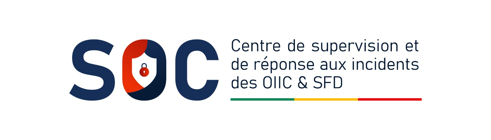

Le SOC national supervise et traite les incidents de cybersécurité des opérateurs d'infrastructures critiques (OIIC) et des systèmes financiers décentralisés (SFD) du Bénin. Permanence 24 h/24, 7 j/7.
Veille et détection continues sur le périmètre des opérateurs critiques et des institutions de microfinance.
Qualification, coordination et traitement des incidents déclarés, jusqu'à leur clôture.
Diffusion des alertes et avis de sécurité aux organismes raccordés.
Le centre est le point de contact des opérateurs d'infrastructures critiques et des institutions de microfinance en cas d'incident de sécurité informatique. Il assure la veille, l'alerte et la coordination de la réponse, dans le cadre de la Politique de Protection des Infrastructures d'Information Critiques (PPIIC, Décret 2023-060) et en articulation avec le bjCSIRT.
Affiliations : FIRST · AfricaCERT · bjCSIRT
Vulnérabilités, menaces et bulletins publiés par le centre. Aucune information sur les incidents en cours de traitement.
Affectant un OIIC ou un SFD. Accessible sans compte.
Enregistré et transmis au SOC. Conservez la référence pour suivre le traitement.
Saisissez votre référence pour consulter l'avancement.
SOC-2026-00042 · Opérateur du secteur Finance · Rançongiciel · détecté le 03/10/2026
En cas d'urgence, appelez — n'attendez pas le formulaire.